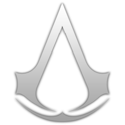
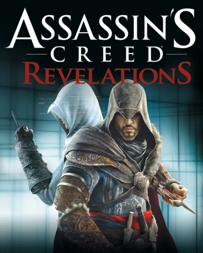

Os jogos mostrados estão em ordem da história e não de lançamento

Historia
A premissa central da história envolve-se a partir da rivalidade entre duas sociedades secretas ancestrais: os Assassinos, que desejam a paz através do livre arbítrio, e os Templários, que têm o objetivo de dominar o mundo e impor a ordem na humanidade.
Franquia Assassin’s Creed
Jouez en parcourant l'histoire dans cette série de jeux vidéo primée. Assassin's Creed vous plonge dans les mémoires de vos ancêtres, qui ont lutté pour préserver le libre arbitre à des moments clés de l'histoire de l'humanité

Assasin's creed ODYSSEY
O jogador assume controle de um espartano rejeitado pela própria família, devido a uma profecia que dizia que ele iria trazer a queda de Esparta, o que fez com que fosse atirado de um penhasco. 17 anos depois, em 431 a.C, o espartano reaparece e descobre uma conspiração contra sua família, ao mesmo tempo que envolve-se na Guerra do Peloponeso e pode escolher entre a Liga de Delos, liderada por Atenas e a Liga do Peloponeso, liderada por Esparta.

Assasin's creed ORIGINS
O jogo segue Bayek de Siuá, um dos últimos Medjai do Egito, e sua busca por vingança contra a Ordem dos Anciões, um grupo misterioso de indivíduos misteriosos que buscam controlar o Egito e estabelecer uma sociedade onde as massas são subjugadas e a ordem prevalece.
Um ano antes dos eventos de Origins, o filho pequeno de Bayek, Khemu, acaba morto pelos membros da Ordem quando eles tentam interrogar Bayek sobre uma câmara misteriosa em Siuá, o vilarejo natal dele. Enfurecido, Bayek trilha um caminho de vingança ao lado de sua esposa Aya, que também está envolvida em um plano para derrubar o Faraó opressivo e incompetente Ptolemeu XIII e colocar Cleópatra no poder.
Fazendo várias alianças e descobrindo uma conspiração muito maior do que ele esperava, Bayek percorre o Egito, libertando suas cidades e nomos dos membros da Ordem que governam eles, e se envolve em eventos como a Guerra Civil Alexandrina, quando Júlio César invade o Egito.
Assasin's creed VALHALLA
Partindo da Noruega, por meio de guerras infinitas e com recursos cada vez mais escassos durante o século IX d.C., os jogadores conduzirão o clã nórdico de Eivor através do gelado Mar do Norte até as ricas terras dos reinos controlados pela Inglaterra. Será preciso estabelecer um novo destino para seu clã, batalhando ao implacável estilo de luta dos guerreiros vikings, apresentados no jogo a partir de um sistema de combate renovado, que inclui a capacidade de manejar duas armas ao mesmo tempo, e enfrentar a maior variedade de inimigos já vista na série.
Com poucos recursos à disposição, os jogadores irão liderar ataques a qualquer local promissor que encontrarem no litoral utilizando seus barcos e adquirindo riquezas. Conforme os vikings se estabelecem em novos lugares, encontram a resistência dos saxões, como o rei Aelfred de Wessex. Contra todas as probabilidades, Eivor deve fazer o que for necessário para manter Valhalla ao seu alcance.

Assasin's creed
O jogo centra em torno do uso de uma máquina apelidada de "Animus", que permite que seus usuários vejam as memórias genéticas de seus antepassados, centradas em torno do protagonista, um barman chamado Desmond Miles. Enquanto Desmond revive a memória de um dos seus antecessores, o Assassino Altair Ian-La'Ahad que viveu na Terra Santa durante a Terceira Cruzada, surgem detalhes sobre uma batalha entre duas facções antigas, os Cavaleiros Templários e os Assassinos, enquanto os dois procuram um artefato conhecido apenas como Peça do Éden.

Assasin's Creed II
O jogo começa imediatamente após os eventos de Assassin's Creed. Desmond Miles e uma aspirante a assassina, Lucy Stillman, escapam do laboratório de Abstergo, seguindo para um esconderijo dos assassinos.
A história se passa no século XV, na Itália, durante o Renascimento, aproximadamente trezentos anos após o primeiro jogo.
O jogador assume o papel de um jovem nobre que se tornou assassino, chamado Ezio Auditore da Firenze. O pai de Ezio e seus irmãos, acusados injustamente de trair a cidade de Florença, são executados em praça pública. Ezio também seria executado, porém conseguiu escapar da morte. Ezio então parte junto com sua mãe e sua irmã para a vila dos Auditore em Monteriggioni, onde descobre que o seu pai era secretamente um assassino. Ezio passa a ajudar o seu tio Mario na guerra entre os templários e os assassinos, com o intuito de se vingar dos causadores da morte de sua família.

Assasin's creed BroterhooD
O jogo começa imediatamente no momento em que Assassin’s Creed II termina, após a conversa entre Minerva e Ezio. Considerado “o segundo capítulo na trilogia Ezio”, este ainda não é Assassin’s Creed III, mas sim um novo capítulo que expande a história do herói e o introduz agora como um verdadeiro mestre na Ordem dos Assassinos.

Assasin's creed RevelationS
O jogo se passa no ano de 1511 d.C., Ezio Auditore da Firenze, já em idade mais avançada, está em busca de segredos escondidos pelo seu lendário antepassado Altaïr em Masyaf, antigo lar dos assassinos. Após ser surpreendido pelos Templários, Ezio viaja até a capital do Império Otomano, Istanbul (Constantinopla), que está dividida em quatro distritos para encontrar misteriosas chaves escondidas pelo explorador Nicolau Polo (pai do também explorador Marco Polo), se estas chaves cairem nas mãos dos Templários, poderão destruir segredos de toda a humanidade.
Assasin's creed iv Black FlaG
O jogo segue as aventuras de Edward James Kenway, um notável pirata e corsário que viveu nas Caraíbas durante a Época Dourada da Pirataria no inicio do séc. XVIII, pai de Haytham Kenway e avô de Connor Kenway, os personagens jogáveis de Assassin's Creed III.
A história de Edward começa quando este se vê acidentalmente no meio do eterno conflito entre Assassinos e Templários. Enquanto isso os piratas mais famosos se juntaram em Nassau, Bahamas, na tentativa de estabelecer uma das primeiras sociedades democráticas.

Assasin's creed RoguE
Assassin's Creed Rogue decorre no século XVIII durante o conflito Franco-Indígena, um dos palcos da Guerra dos Sete Anos, e conta a história de Shay Patrick Cormac, um Assassino que, ao longo do enredo, acaba se tornando Templário.
Assasin's creed III
A trama se desenrola no século XXI onde Desmond Miles, o protagonista da série, com a ajuda de uma máquina conhecida como Animus, revive as memórias dos seus ancestrais para o ajudar a descobrir uma maneira de prevenir o Apocalipse de 2012.
A história principal se desenrola antes, durante e depois da Revolução Americana entre 1765 e 1783 e segue o ancestral de Desmond, de ascendência mohawk e inglesa, Ratonhnhaké:ton,também conhecido como Connor, enquanto ele luta contra as tentativas dos Templários de controlar a nova nação.

Assasin's creed III liberation
Liberation decorre em Nova Orleans, entre 1765 e 1780, na linha de tempo entre o fim da Guerra Franco-Indígena e meados da Revolução Americana.
O jogo segue a história de Aveline de Grandpré, uma mulher Assassina de ascendência Africano-Francesa. Aveline é recrutada para a Irmandade dos Assassinos por Agate, um escravo fugitivo, que atua como seu mentor.
O enredo desenvolve-se em volta da prática cultural plaçage, onde homens franceses e espanhóis ricos arranjavam casamentos com mulheres de descendência africana, indiana ou crioula, permitindo assim a essas mulheres e aos seus filhos ganharem poder e posições relevantes na sociedade.
Assasin's creed UnitY
O protagonista do jogo é Arno Victor Dorian , um francês nascido em Versalles, filho de um pai Assassino. Depois do seu pai ser assassinado, Arno é adotado sem saber que a sua família adotiva tem uma posição muito importante na Ordem dos Templários, e que o seu padrasto é um Grande Mestre da organização.
Arno culpa-se quando o seu pai adotivo é assassinado, e parte numa tentativa de redenção juntando-se à Irmandade dos Assassinos, subindo gradualmente de nível, tal como Altaïr Ibn-La'Ahad e Ezio Auditore da Firenze de jogos anteriores.

Assasin's creed SyndicatE
No jogo, o jogador assume o papel de um Iniciado, assim ele explora a história dos protagonistas gêmeos, Jacob e Evie Frye, ambos os quais são jogáveis. Os dois chegam em Londres em 1868, quando a Revolução Industrial atinge o seu clímax, trazendo seu monte de desigualdade e pobreza em uma cidade controlada pelos Templários. Para parar a sua regra, os Fryes vão assumir o crime organizado, em um esforço para reunir um exército e Londres livre.